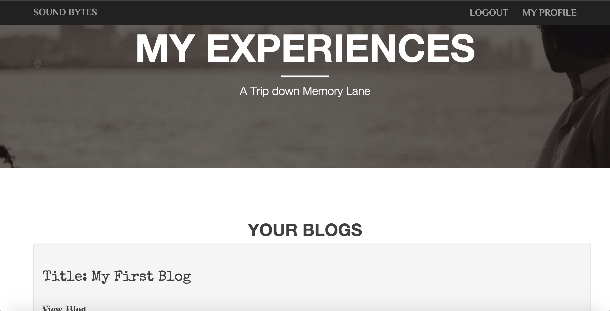

My Blogs Functionality
This Page can be used only by registered users who have logged into the application.
This Page can be used by the users to view their own blogs. When the user opens this page, it presents a list of Blogs
written by the user. A link to "detailed blog-view page" is also provided alongwith.
Snapshot

My Blogs Services
My Blogs services are designed using Angular.JS at client end and Node.JS and MongoDB at server end.
- My Blogs Service - Allows the logged in user to view all their blogs as a list.
During the page load, AngularJS requests makes GET request to the NodeJS for all the blogs of the particular user.
NodeJS fetches the data from MongoDB and replies back with appropriate content. AngularJS then renders the content onto the web page.
Next Page